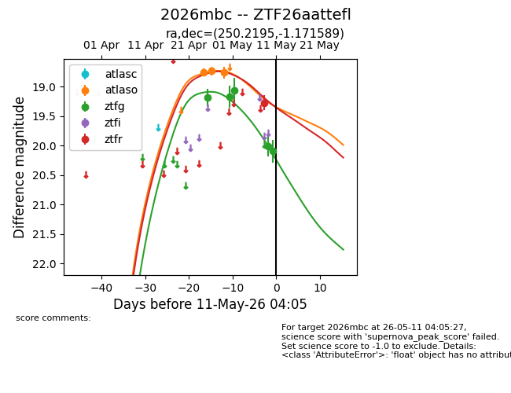
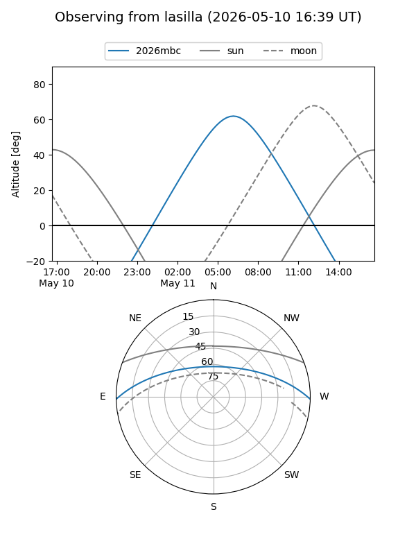
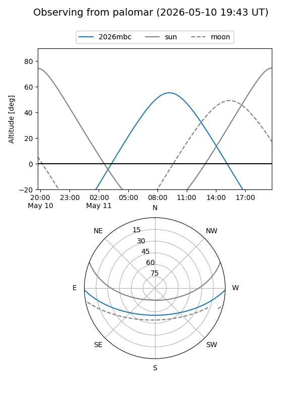
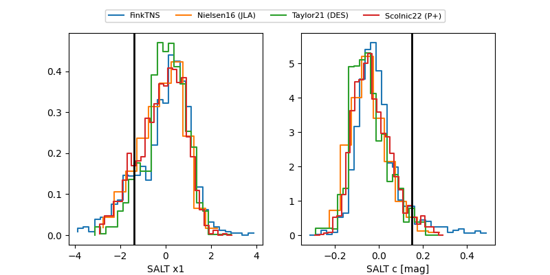

2026mbc
Target 2026mbc at 2026-05-11 04:13
Aliases and brokers:
FINK: link
Lasair: link
ALeRCE: link
TNS: link
YSE: link
alt names
ZTF26aattefl (ztf,fink_ztf)
2026mbc (tns,yse)
Coordinates:
equatorial (ra, dec) = 250.2195,-1.17159
equatorial (HMS+DMS) = 16:40:52.67,-01:10:17.72
galactic (l, b) = (15.5165,+28.07322)
Flags:
likely cv
Photometry:
last atlaso=18.76, ztfg=20.10, ztfr=19.27
3 atlaso, 5 ztfg, 1 ztfr detections
Lightcurve

Visibility


Additional plots
